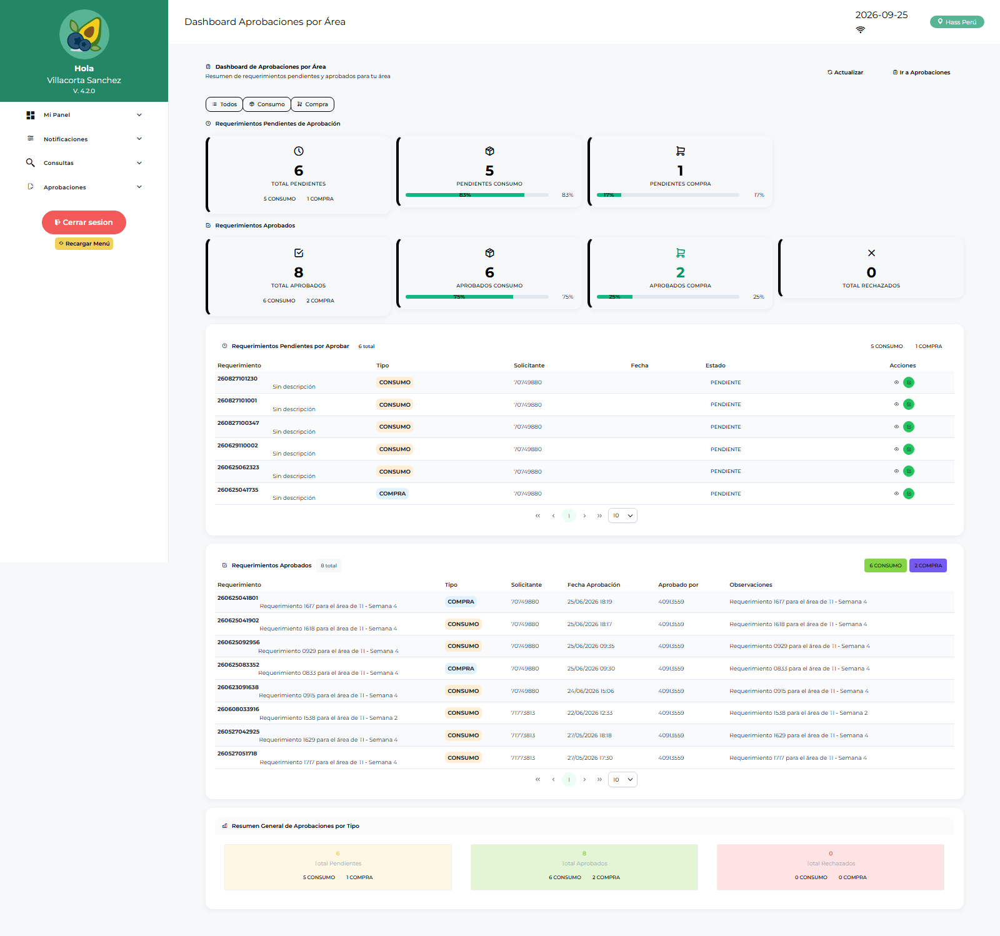

Manual de Usuario — Aprobador Consumo (APLOGIST)
| Campo | Valor |
|---|---|
| Código de rol | APLOGIST |
| Nombre | Aprobador de Consumo / Jefe de Área |
| Pantalla inicial | Dashboard Aprobaciones por Área (/main/dashboard-aprobaciones-area) |
| Video tutorial | ../video-tutoriales/VIDEO_TUTORIAL_APLOGIST.html |
1. ¿Quién eres?
Eres el jefe de área aprobador: los requerimientos que crean los usuarios de tu área llegan a tu bandeja para aprobación o rechazo. También apruebas los reingresos de material. Sin tu aprobación, el requerimiento no avanza a compras.
2. Acceso
Login → Dashboard Aprobaciones por Área: contadores de pendientes, aprobados, rechazados y acceso directo a la bandeja.

3. Pantallas disponibles
| Pantalla | Qué haces |
|---|---|
| Dashboard Aprobaciones por Área | Resumen de pendientes de tu área |
| Aprobaciones / Aprobaciones por Área | Bandeja: aprobar o rechazar requerimientos |
| Reporte Aprobaciones Área | Historial y trazabilidad de tus decisiones |
| Reporte Requerimientos Aprobados | Consulta de lo ya aprobado |
| Dashboard Operativo | Estado operativo general |
| Conformidad de Despacho | Conformar recepciones |
| Devoluciones de Consumo | Ver devoluciones registradas |
| Reingresos | Aprobar/rechazar reingresos (solo tú) |
| Reporte Requerimientos / Logístico / Catálogo | Consultas |
4. Procedimientos frecuentes
Aprobar un requerimiento
- Aprobaciones por Área → lista de pendientes de tu(s) área(s).
- Abre el requerimiento: revisa solicitante, ítems, cantidades, centro de costo, adjuntos.
- Decide:
- Aprobar → pasa a logística para consolidación/compra.
- Rechazar → indica el motivo; vuelve al solicitante.

Aprobar un reingreso
- Reingresos → solicitudes de material que vuelve al almacén.
- Revisa ítems y estado → Aprobar o Rechazar.
Revisar tu historial
Reporte Aprobaciones Área → filtra por fecha/estado → exporta si necesitas respaldo.

5. Restricciones
- No creas requerimientos (tu rol es aprobar).
- No ves compras, cotizaciones, órdenes ni almacén.
- Solo ves requerimientos de las áreas que te fueron asignadas (lo configura el admin en Usuarios por Área).
6. Problemas comunes
| Problema | Solución |
|---|---|
| No veo requerimientos de un área | Pide al administrador (ADLOGIST/TILOGIST) asignarte esa área en Usuarios por Área |
| Rechacé por equivocación | El solicitante debe generar un nuevo requerimiento o pedir revisión a logística |
| El contador no baja | Refresca la página; el contador se actualiza al cargar |